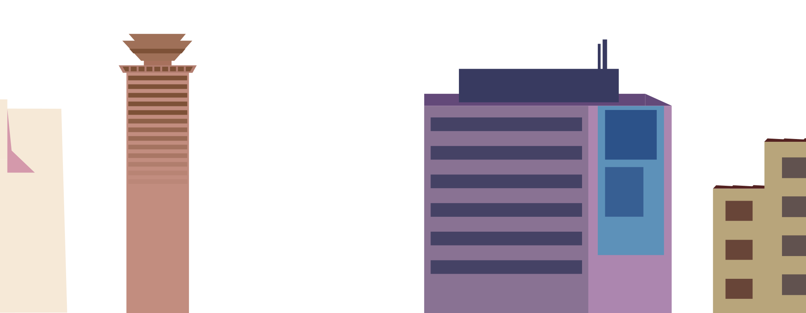
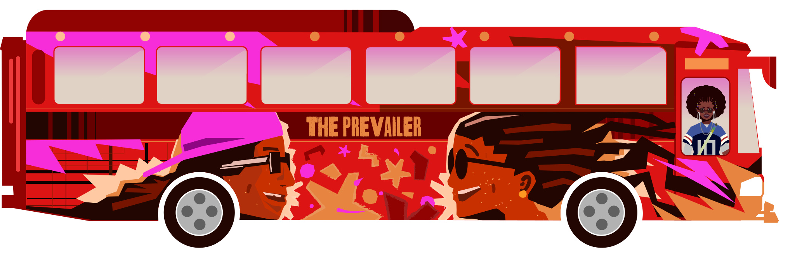
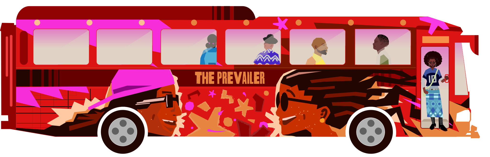
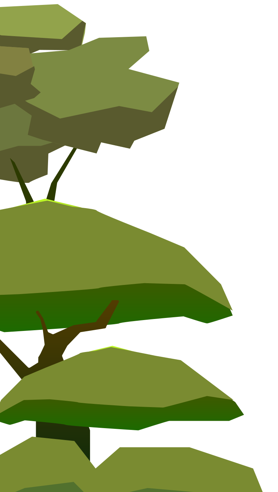
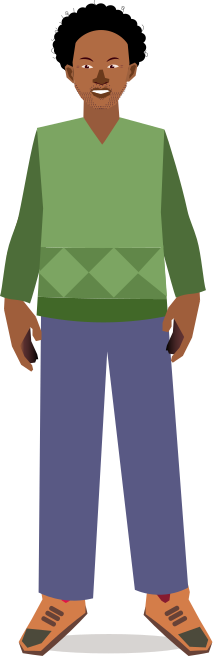
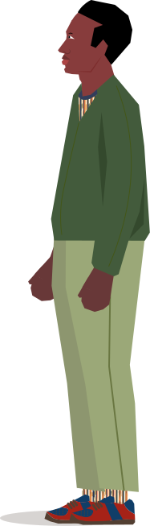
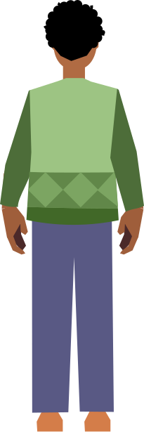

Let's ride through Africa's language landscapes, mapping the digital injustices faced by its people every day.

And along the way, our matatu will also make a scenic, more hopeful detour, tracing stories of how AI is being transformed from a tool of colonial extraction into a practice of self-determination by African communities who are reclaiming their languages online.


.svg)

Iconic. Bold. Unstoppable. This is the Prevailer — the heartbeat of every route.



“Data set building is very expensive. It would be great to pay people to do it. In some projects we’ve had people volunteer to do it, but I wish we had the money to pay people well to do this work because it’s actually very valuable work.”
There is a critical need to shift the funding paradigm for language technology development towards sustainable, equitable, community-led and locally-driven models that directly benefit the community by creating jobs, boosting local economies, and stimulating continuous tech development.
Much like the matatu system, numerous new initiatives are emerging to address the problem of inequitable and unsustainable funding structures. For example, one collective effort is to unify community-centred language technology groups across Africa under an umbrella organisation, such as the Huniki Federation.
We use the bus fare not only to make a living, but also to maintain the matatu itself and contribute to the roads we all rely on. This local economy benefits the community as a whole.
Matatus are highly organised through a complex network of associations. They are categorised as public services, mostly privately owned, but always collectively managed.
The Huniki Federation aims to create a robust private sector while operating under a social-mission model, reducing dependency on funding from non-profit organisations and Big Tech, and instead investing directly in local communities. This represents a novel, Pan-Africanist approach to achieving digital self-determination.
The lack of economic resources is compounded by Big Tech appropriation: corporations often use open-source datasets to train their models without ever giving back to the communities that curated them.
“I think when people understand more about data licensing and sharing, it helps them make better decisions. It’s no longer just open source versus non-open source. Because even open source is a very complex thing. It has different aspects of it.”









In the African region we are highly multilingual! I speak Twi, Pidgin and understand Fante. What languages do you speak?
Language is the foundational inheritance passed down from our ancestors, a living connection we share with each other and those who follow us.
It is the very essence of how we think, speak, imagine, and experience the world. It sits at the core of our identity and culture, enabling us to share our stories and collective knowledge.


For aeons, Africa has been home to over 2,000 distinct languages across 54 countries — a profound pluralism that stands in sharp contrast to the European historical preference for linguistic uniformity.
Now let me draw you a comparison.
Colonial systems neglected public transport networks too. But look around you — this matatu — it filled that gap.
Fast, flexible, for the people.
Today, matatus carry most of Nairobi's commuters, especially into the neighbourhoods colonial roads never reached.
Algorithm Avenue — where the road ahead is written in your own language.
Alright, my people! Before we go ahead, let's take it back a bit! Africa has over 2,000 distinct languages — more than any other continent. Centuries of colonial rule erased, suppressed and replaced these languages, severing deep cultural connections. But our languages survived.










African technologists are themselves members of the communities they serve. They build their organisations, methods and models from a place of indigenous relationality and local social history.
In working out solutions to not just technical problems but complex social dynamics, these technologists are moving beyond mere representation to build the right to think, theorise, and interpret the world from an African perspective.
The Digital Umuganda initiative perfectly exemplifies a community-centred approach. It draws directly on the Rwandan philosophy of Umuganda—meaning ‘coming together with purpose’ in Kinyarwanda—a practice in which communities gather for collective public work followed by open discussion.
“So the founders of Digital Umuganda, who were Audace and Ali, sat down, looked at Rwanda and they looked at Digital Umuganda and realised that’s the model that made sense, bringing together the community by making them understand what we are trying to achieve and have them contribute. The rest is history.”
Instead of staying behind a screen, community-centred technologists prioritise on-the-ground practices—physically meeting and spending time with community members to navigate power dynamics, collect on-ground data, and foster mutual trust. In fact, Lesan AI has built some of the best machine translation models for Tigrinya through these methods.
“Many people may not know how to use the Internet or they may not have easy access to it. But we don’t want to limit contributions to just people who have easy access to the Internet. So we also put people on the ground and then distribute these tasks to contributors who don’t necessarily use the Internet. We would go to remote areas and villages with our recording devices to collect audio data and then compensate them and return. This makes our data representative and diverse.”
Here, data collection is an act of shared reflection.
Every data point is an outcome of the community’s historical experience, captured in a way that empowers the collective rather than exploiting the individual. Because this data comes from real conversations rather than internet scraping, the resulting tools are inherently more nuanced.
This relational approach can even filter out the racial, gendered, and systemic biases that often plague mainstream language tech applications.
Major AI models suffer from significant biases that disadvantage many people. For example, they make more errors when processing regional accents than when processing “standard” speech, and they can reinforce gender stereotypes by defaulting to male pronouns in translations.
Language activists and technologists strategically use open knowledge platforms like Wikimedia.
For example, Dagbani language activists began by recording language audio on Wikimedia Commons, which eventually led to a collaboration with language technologists with NLP skills.
This powerful combination of community knowledge and technical expertise is key for building meaningful language technology tools.
“We realised that Wikidata lexicographical data would make a very good use of the data by adding audio pronunciation to lexemes. When NLP Ghana reached out to us, we realised there was a good opportunity to collaborate. We were able to use our Wikimedia data to train their AI model to create the first layer for Dagbani automatic speech recognition in the Khaya application. Seeing it needed more data, Dagbani Wikimedia User Group then began creating sentences and short phrases using solely Wikipedia articles. And this second stage was used to improve the quality of translation on the Khaya application. And that’s how we found ourselves from Wikimedia to NLP. Now the Khaya application fully supports Dagbani text translation and automatic speech recognition. We are now replicating this process for other Mabia languages.”


But, despite their innovation, African initiatives face a staggering funding trap. Huge resource gaps often force local teams to prioritise the goals of Global North donors over community needs, ideal methods, and the urgent needs of their own people.
With 85% of the internet dominated by just ten languages, about 9 out of 10 African internet users are forced to switch to a colonial language simply to engage online.
As this pattern repeats globally, billions of people face a digital world where their local languages are functionally invisible.
These languages are invisible online for multiple reasons. The problem isn't just a lack of sufficient corpora; look around this matatu, the speakers are there in abundance. The deeper problem is that the internet was built for written text, effectively marginalising the rich oral, signed and multivariate language traditions of the Global Majority.
This isn't a technical failure—it's a historical one.
For oral languages, insufficient written and textual corpora have meant that their languages do not have easy access to digitisable and machine-readable data. As a result, they have come to be termed "low-resource languages" by scholars of the Global North.
This under-resourcing is not accidental, but an outcome of the systems that led to the universalisation of Western epistemics. By contrast, we propose to expand on context and identify the histories of how this gap came to be.
By naming them "digitally under-resourced," we point to the fact that the struggle to bring African languages online is not a technical problem; it is a historical one, deeply rooted in the legacy of colonialism.
When a language is excluded from the internet, people's history and knowledge are also silenced. Without resources in their own languages, the next generation is forced to adopt dominant viewpoints, losing their own in the process.
Even when indigenous languages are instituted, widely spoken local languages, such as Amharic and Kiswahili, can overshadow a multitude of languages spoken by a smaller number of people.
This constant pressure to adopt the dominant language, colonial or local, is one of the causes of a profound reduction in linguistic diversity, pushing many languages towards extinction.
“This is why GalsenAI is trying to work on our languages by trying to build machine translations or speech to text technologies for our communities—because we are the ones who know how our language is spoken, we are the ones who know what the language needs. We don’t want to be here waiting for some Americans or any others to come and do this for us.”